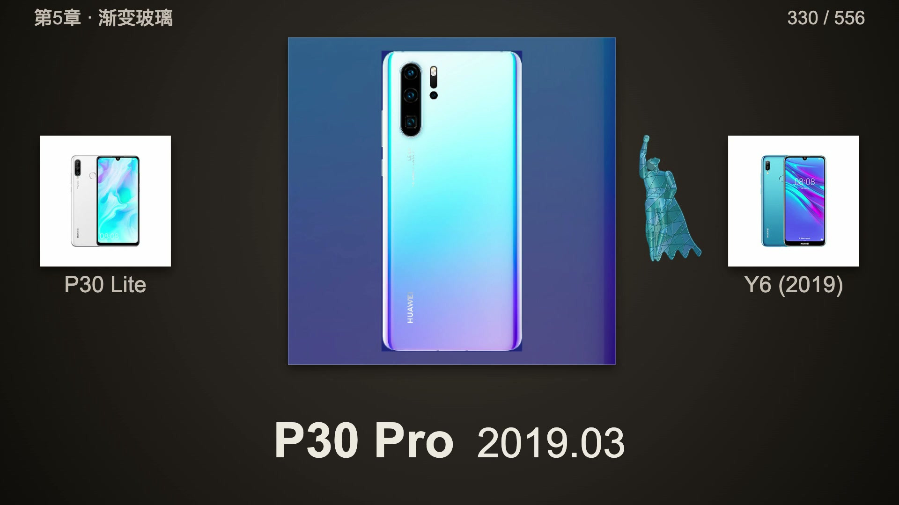

穿过华为手机的22年

从你们的反馈，再走一遍
最初的版本太长，白底刺眼、高速横滚让人眼花，字号偏小，人物有时挡住手机，也遗漏了分家前荣耀。本版改用暖石墨柔光、中央固定主台与前后机型、同向短交接；放大型号和月份，给重点图更多停留，让人物在外缘换肤。保留451个华为节点，105个分家前荣耀节点按年月穿插，重编九章配乐。
片子仍然较长，时间有限可以拖动进度，或按章看熟悉的年代。做它不是为了追流量，而是给22年的产品历程做一次周期复盘。从功能机到智能机，再到折叠屏，技术底蕴在几代人的接续努力中积累，争取从追赶走向引领。哪一部，陪你走过青春？
九章路线
01 / 2004—2009发端：掌中微光
00:03 · 56个展示节点
02 / 2010—2012启程：智能涌现
01:08 · 85个展示节点
03 / 2013—2015成形：线条与光泽
02:47 · 80个展示节点
04 / 2016—2018开阔：影像视野
04:23 · 101个展示节点
05 / 2019—2020流光：渐变玻璃
06:26 · 106个展示节点
06 / 2021—2022凝聚：金属与双圆
08:33 · 29个展示节点
07 / 2023呼吸：贝母与留白
09:10 · 25个展示节点
08 / 2024—2025展开：折叠与纹理
09:44 · 50个展示节点
09 / 2026归航：当代与远景
10:46 · 24个展示节点